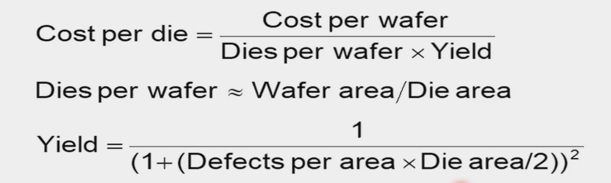

Chap1¶
导入¶
电脑的发展¶
第一代¶
ENIAC¶
第一个通用计算机，图灵完备。
冯诺依曼架构¶
计算和存储分离，数据与指令保存在同一个储存器
第二代¶
晶体管代替电子管，编程语言逐渐使用形象语言（汇编），I/O使用卡片和打印。
eg IBM 1401
第三代¶
集成电路代替晶体管，出现操作系统，可以同时运行多个应用程序
第四代¶
微处理器（microprocessor）代替集成电路
Commercial Personal Computers： IBM PC、Apple、MicroSoft
RISC（reduced instruction set computer)精简指令集与CISC（complex instruction set computer）对应。Intel是CISC。
摩尔定律：集成电路上可容纳的晶体管数目，约每隔两年便会增加一倍
计算机的分类¶
- Personal computer 个人电脑，需要在cost和performance做一个trade off
- server computer 服务机。需要大量容量，主要在server上开发
- super computer 超级计算机。主要用于科学计算。
- embedded computer 嵌入式计算机。功能单一，成本最低。
计算机的定义¶
Computer is an electronic device that manipulates data according to a list of instructions, with capability of Turing machine.
- 电子化的实现方式
- 有指令集
- 可执行指令
- 可存储指令和数据
- 图灵完备的
计算机组成¶
软件和硬件¶


Firmware：专门为硬件设计的软件，为操作系统提供接口
software specially designed for a piece of hardware
指令集是硬件和软件的接口
从高级语言到硬件语言¶
- 机器语言 Machine language：由汇编语言经过汇编器汇编而成，与汇编语言一一对应。
- 汇编语言 Assembly language：由高级语言经过编译器编译而成，一条高级语言语句会对应多种汇编语句
- 高级编程语言 High-level programming language
如何造一个处理器？¶
主板核心由集成电路/芯片构成，processor和memory都由integrated chip构成。
单晶硅经过切片变成晶圆，再变成带有功能的晶片，die指的是一个个小的芯片
Yield（良品率）proportion of working dies（小片） per wafer：\(Cost \ per\ die = \frac{Cost \ per\ wafer}{Dies\ per\ wafer \times Yield}\)

处理器面临的挑战¶
- 内存墙：processor和memory功能迭代更新的进度不一样，内存性能提高慢
- 功耗墙：单位面积功耗大，散热问题大
- 工艺发展限制：最小能达到的直径有限
计算机设计的performance和idea¶
Response Time and Throughput¶
响应时间/执行时间（response time）：执行一个任务的时间
吞吐率 Throughput（bandwidth）：单位时间内能完成多少任务
多核处理器可以提高吞吐量，但是对某个任务来说响应时间不一定变快。对于单个处理器来说，人们通常更关注响应时间。
Relative performance¶
Performance = 1 / Execution Time
\(\frac{Performance_x}{Performance_y} = \frac{Execution\ time_y}{Execution\ time_x}=n\)
Execution Time
Elapsed time：与Execution time相同，都为总响应时间，包括processing、I/O、OS overhead、idle time
CPU time：处理给定任务在CPU上运行的时间，是Elapsed Time已经除去过I/O、内存访问等时间。也等于 CPU Clock Cycles * Clock Cycle Time=CPU Clock Cycles / Clock Rate即一个任务执行的周期数每个周期的时间。clock rate*为clock time的倒数。
CPU time可以通过减少clock cycles、增加clock rate（改进工艺，如7nm到5nm）、硬件的设计在clock rate和clock cycle count间平衡（如果要通过硬件直接实现复杂的功能来减少cycle count那么就需要较长的路径，那么就会增加clock rate）
Clock Cycles 能等于Clock Cycles = Instruction n Count(多少条指令) * Cycles per Instruction(每条指令的执行循环数)(CPI) 那么 CPU Time = Instruction n Count * CPI / Clock Rate
Instruction n Count 由 program、ISA和compiler决定
CPI 由 CPU硬件设计决定，不同的指令有不同的CPI，Average CPI由Instruction mix决定。所以一定要在某个程序的背景下去比较CPI，因为不同程序使用的指令数量不同，所以CPI是每种指令乘上每种指令使用的周期数加总后归一化得到的结果。
功耗
可以通过多核处理器（每个芯片多个处理器）提高性能，同时程序员需要主动利用不同的核，需要在不同核之间同步和通讯。
单核也可以通过双发、四发等在一个时钟内执行多条指令。
SPEC CPU Benchmark 把代码作为集合，运行后与标准比较，以一种相对速度来评价。把所有的程序累乘后开根作为最后的结果。
SPEC: Standard Performance Evaluation Corp
Benchmark工具是一种用于测试计算机CPU性能的软件。 通过运行一系列的测试和测量，这些工具可以评估CPU 处理器的运行速度、稳定性和效率。
SPEC Power Benchmark 跑一个特定程序的功耗比较。把不同负载下的运行表现累加除以功耗累加。
Amdahl’s Law 改进计算机的某一方面，在总体表现中会有一个等比例的改进。
- 希望能做到功耗和运行状态成比例，一般来说需要满状态运行的时间非常少，大部分时间处于idle闲置状态，所以需要尽可能地降低闲置时的功耗
MIPS(Millions of Instructions Per Second)一个单位
Idea¶
- Design for Moore’sLaw(设计紧跟摩尔定律)
- 晶体管更小，一个芯片可以有更多的功能、更低的公告、更低的价格。
- 需要高性能的器件要紧跟，如处理器，但一些电源类的器件使用次一点的制造工艺也无妨。
- Use Abstraction to Simplify Design(采用抽象简化设计)
- ISA的概念连接了硬件和软件，OS也是同理连接了应用层和电脑
- Make the Common Case Fast (加速大概率事件)
- Amdahl’s Law
- Performance via Parallelism(通过并行提高性能)
- 多核，多台服务器，电商购物并行（大家同时在买不同的东西）
- Performance via Pipelining (通过流水线提高性能)

- Performance via Prediction(通过预测提高性能)
- Cashe的思想，先挪一部分的数据到Cashe中
- Hierarchy of Memories (存储器层次)
- Dependability via Redundancy(通过冗余提高可靠性)
- 需要有能故障出现时能够替换的或者帮助检测故障的器件
Recap¶
为什么CPU的速度提不上去/比USB提速慢？
- CPU64/32位并行，USB2线串行，CPU需要更多的同步，无法把速度提上去
- 散热
- 传输接口没有逻辑，CPU有逻辑，组合逻辑会限制时钟频率